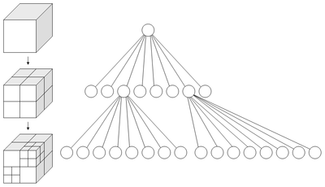
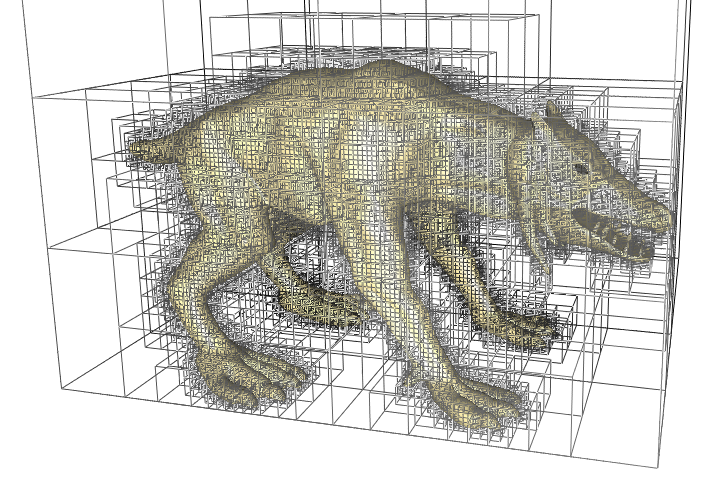

Theme Color Extracting
By Using Interesting Algorithm
What's Theme Color ♫
Usefulness
- Analysis Palette
- For Searching
- Sensitive Color Filter
- Grouping
- etc.
Who May Use It?
- Huaban
- UpYun
Algorithm
Minimum Differ Algorithm
最小差值法
It's Simple
它很简单
Preparation
You need a standard palette.
An Example of Standard 256-Color Palette
Steps
- Traverse all the pixels;
- For each pixels, calculate out differ for each standard color;
- A standard color with minimum differ is its standard color.
Example
#FF7800 -> #FF9900
- R: abs(0xFF - 0xFF) = 0
- G: abs(0x78 - 0x99) = 0x21 = 33
- B: abs(0x00 - 0x00) = 0
- Differ: 0 + 33 + 0 = 33
Be a Code Monkey
function calculate(pixel, standard) {
return Math.abs(pixel.r - standard.r) +
Math.abs(pixel.g - standard.g) +
Math.abs(pixel.b - standard.b);
}
function minDiffer(pixel) {
var minIdx = 0;
var minDiff = calculate(pixel, palette[0]);
for(var i = 1; i < palette.length; i++) {
var temp = calculate(pixel, palette[i]);
if(temp < minDiff) {
minIdx = i;
minDiff = temp;
}
}
return palette[minIdx];
}A Dobe of Code Monkey
var result = pixels.map(function(pixel) {
return minDiffer(pixel);
});
More Code ԅ(¯﹃¯ԅ)
摸口袋
优点 Advantages
- 算法简单粗暴易懂
- 易于归类和检索的实现
缺点 Disadvantages
- 色块较少，保真度低
- 如果要色块多的话，运营人员很累
Octree
八叉树剪枝合并法
Introduce to Octree
該算法最早見於 1988 年，M. Gervautz 和 W. Purgathofer 發表的論文《A Simple Method for Color Quantization: Octree Quantization》當中。其時間複雜度和空間複雜度都有很大的優勢，並且保真度也是非常的高。
Principle 原理
《圖片主題色提取算法小結》- Chapter 2.2
What's Octree?
Octree Stands for a 3D Space
And... How About to Stands for a Color Space?
Click me ε٩(๑> ₃ <)۶з0xFF7800
Calculate
0xFF = 1111 1111
0x78 = 0111 1000
0x00 = 0000 0000
Brch = 4666 6444
What's Meaning?
- 根节点的第五个子节点
- 的第七个子节点
- 的第七个子节点
- 的第七个子节点
- 的第七个子节点
- 的第五个子节点
- 的第五个子节点
- 的第五个子节点
Node Struct
var OctreeNode = function() {
this.isLeaf = false;
this.pixelCount = 0;
this.red = 0;
this.green = 0;
this.blue = 0;
this.children = new Array(8);
for(var i = 0; i < this.children.length; i++) this.children[i] = null;
// 這裏的 next 不是指兄弟鏈中的 next 指針
// 而是在 reducible 鏈表中的下一個節點
this.next = null;
};
Insert Node
function addColor(node, color, level) {
if(node.isLeaf) {
node.pixelCount++;
node.red += color.r;
node.green += color.g;
node.blue += color.b;
} else {
// 由於 js 內部都是以浮點型存儲數值，所以位運算並沒有那麼高效
// 在此使用直接轉換字符串的方式提取某一位的值
//
// 實際上如果用位運算來做的話就是這樣子的：
// https://github.com/XadillaX/thmclrx/blob/7ab4de9fce583e88da6a41b0e256e91c45a10f67/src/octree.cpp#L91-L103
var str = "";
var r = color.r.toString(2);
var g = color.g.toString(2);
var b = color.b.toString(2);
while(r.length < 8) r = '0' + r;
while(g.length < 8) g = '0' + g;
while(b.length < 8) b = '0' + b;
str += r[level];
str += g[level];
str += b[level];
var idx = parseInt(str, 2);
if(null === node.children[idx]) {
node.children[idx] = createNode(node, idx, level + 1);
}
if(undefined === node.children[idx]) {
console.log(color.r.toString(2));
}
addColor(node.children[idx], color, level + 1);
}
}
Merge Node
当叶子节点数超载了，将把一些父节点下的所有叶子节点合并到父节点。
Why Can?
你肿么能这样纸！？Σ(lliдﾟﾉ)ﾉ
Let's Do an Experiment
0xFF7800
0xFF7800
R: 1111 1111
G: 0111 1000
B: 0000 0000
0xFF7800's Brothers
屎黄色の好基友 ╮(╯∀╰)╭
R: 1111 111 (1/0)
G: 0111 100 (1/0)
B: 0000 000 (1/0)
屎黄色家族某小分队
#FE7800
#FE7801
#FE7900
#FE7901
#FF7810
#FF7811
#FF7910
#FF7911
Just Merge It
By Querying Reducible Linklist
从新建节点说起
function createNode(idx, level) {
var node = new OctreeNode();
if(level === 7) {
node.isLeaf = true;
leafNum++;
} else {
// 將其丟到第 level 層的 reducible 鏈表中
node.next = reducible[level];
reducible[level] = node;
}
return node;
}
找最深（井冰）的可并节点 (΄◞ิ౪◟ิ‵)
// 找到最深層次的並且有可合併節點的鏈表
var lv = 6;
while(null === reducible[lv]) lv--;
// 取出鏈表頭並將其從鏈表中移除
var node = reducible[lv];
reducible[lv] = node.next;
呐，都写到这里了，你要对人家负责…… (／‵Д′)／~ ╧╧
function reduceTree() {
// 找到最深層次的並且有可合併節點的鏈表
var lv = 6;
while(null === reducible[lv]) lv--;
// 取出鏈表頭並將其從鏈表中移除
var node = reducible[lv];
reducible[lv] = node.next;
// 合併子節點
var r = 0;
var g = 0;
var b = 0;
var count = 0;
for(var i = 0; i < 8; i++) {
if(null === node.children[i]) continue;
r += node.children[i].red;
g += node.children[i].green;
b += node.children[i].blue;
count += node.children[i].pixelCount;
leafNum--;
}
// 賦值
node.isLeaf = true;
node.red = r;
node.green = g;
node.blue = b;
node.pixelCount = count;
leafNum++;
}
Start Building Octree
for i : 0 -> pixels count do
addColor(root, pixels -> i, 0)
while leafNum > maxColors then
reduceTree()
想蒙混过关可是不对的呢。(◓Д◒)✄╰⋃╯
function buildOctree(pixels, maxColors) {
for(var i = 0; i < pixels.length; i++) {
// 添加顏色
addColor(root, pixels[i], 0);
// 合併葉子節點
while(leafNum > maxColors) reduceTree();
}
}
终于到查询了

Process
- DFS from root node;
-
- If it's not leaf, dive into children;
- Otherwise, calculate out value of this node.
Cooooooooode it! *ଘ(੭*ˊᵕˋ)੭* ੈ✩‧₊˚
function colorsStats(node, object) {
if(node.isLeaf) {
var r = parseInt(node.red / node.pixelCount).toString(16);
var g = parseInt(node.green / node.pixelCount).toString(16);
var b = parseInt(node.blue / node.pixelCount).toString(16);
if(r.length === 1) r = '0' + r;
if(g.length === 1) g = '0' + g;
if(b.length === 1) b = '0' + b;
var color = r + g + b;
if(object[color]) object[color] += node.pixelCount;
else object[color] = node.pixelCount;
return;
}
for(var i = 0; i < 8; i++) {
if(null !== node.children[i]) {
colorsStats(node.children[i], object);
}
}
}
Want Bit Operation
想用位运算？
成全你 (๑ơ ₃ ơ)♥
/**
* eg.
* R: 10101101
* G: 00101101
* B: 10010010
*
* idx: 50616616
*/
unsigned char r = (color->red >> (7 - level)) & 1;
unsigned char g = (color->green >> (7 - level)) & 1;
unsigned char b = (color->blue >> (7 - level)) & 1;
int idx = (r << 2) + (g << 1) + b;
But
阮一峰 / ฅ●ω●ฅ捌
这套运算符针对的是整数，所以对Javascript完全无用，因为Javascript内部，所有数字都保存为双精度浮点数。如果使用它们的话，Javascript不得不将运算数先转为整数，然后再进行运算，这样就降低了速度。而且"按位与运算符"&同"逻辑与运算符"&&，很容易混淆。
Demo Pictures for Octree
258824
244864
203897
129567
73050
66014
22675
19093
13200
9855
5687
5293
197
55
6
3
190665
73992
43882
43193
22454
22331
15390
9317
5244
1008
755
293
152
123
1
Related
F.A.Q
问题时间
! Fin
XadillaX @Huaban in 29/09/2014Powered by Reveal.js